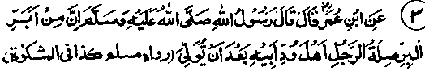

Chapter Three · Section (d): Ahadith concerning maintenance of kinship
2. Treatment for deceased father’s friends

Hadith 3
Ibne Umar Radhiallaho anho narrates that Rasulullah Sallallaho alaihe wasallam once said, "An excellent way of showing kindness to one’s father in his absence is to treat his friends and acquaintances in a kindly way".
Note: Absence may be temporary or permanent from this world i.e. death. In the latter case, showing kindness to one’s father’s friends will be a higher virtue. For, if a person treats his father’s friends kindly, in the absence of his father when alive, he may be doing so in order to win the favour of his father for his own selfish designs, whereas, if he treats them kindly even after the death of his father, this will not be for any selfish design, but will be out of genuine regard and esteem for him. In another Hadith, Ibne Dinar Rahmatullah alaihe relates that Abdullah Ibne Umar Radhiallaho anho was going on a journey to Makkah when he saw a bedouin going on the way. Ibne Umar Radhiallaho anho gave him his own riding-beast, took off his own turban and gave it to him as a gift. Ibne Dinar Rahmatullah alaihe said to him, "This man might have been pleased with something less". Ibne Umar Radhiallaho anho said, "This man’s father was a friend of my father and I have heard Rasulullah Sallallaho alaihe wasallam saying, "Showing kindness to the friends of ones father gets the best return" Abu Hurairah Radhiallaho anho says that, on one of his visits to Madinah, Ibne Umar came to see him and said, "Do you know why I have come to see you? I have heard Rasulullah Sallallaho alaihe wasallam saying, "If anyone wishes to show kindness to his father who is dead, let him treat his father’s friends in a kindly manner, and (you know that) my father (Umar) was a friend of yours". (.Targheeb).
A Hadith reports Abu Usaid Maalik bin Rabi'ah Radhiallaho anho as saying, "While we were sitting in company with Rasulullah Sallallaho alaihe wasallam, a man of the Banu Salma Tribe came to him and said, "O Rasulullah, is there any way left for me to show kindness to my parents after their death?" He replied, "Yes, you can invoke Allah’s blessings on them, make ‘Istighfaar’ for them (ask Allah’s forgiveness for them), fulfil the promises (if any) made by them with people, treat their relatives and dependents with kindness and show respect to their friends". (Mishkaat). A version adds: At this the man said, "What an excellent idea!" and Rasulullah Sallallaho alaihe wasallam replied, "Practice it, then". (Targheeb)